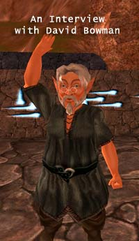

|
Interview with David Bowman of Tulga Gamesby Shannon Appelcline David Bowman is a veteran of the gaming industry who is now leading Tulga Games and their online MMORPG, Horizons: Empire of Istaria. This interview with him was conducted by Shannon Appelcline of Skotos.. Shannon Appelcline: Tell me a bit about your background in the online gaming industry. David Bowman: I started with Bungie as a designer for Myth II. When Microsoft started conversations with Bungie about acquisition I went to Turbine. Asheron's Call had just launched and they were hiring designers. MMOs are the next great evolution in entertainment and I knew where I wanted to be working. I became the Vice President of Production at Turbine and led the AC live team until July of 2001. Artifact Entertainment hired me then and I've been with Horizons: Empire of Istaria through the launch and Tulga Games' acquisition of the project and team. I'm now the CEO and Creative Director for Tulga Games. Because we have a small team focused on Horizons, I wear multiple hats in addition to those titles. I provide the Live team with world building, quest creation and data entry whenever it's needed. It can make for long weeks, but for a small company it's essential that the leader of the company understand the product, service and audience. SA: You say that MMOs are the next great evolution in entertainment. What makes them so?  DB: If I were to list what I consider to be the great forms of entertainment of history I'd do it like this: dance, music, story-telling, painting, games, theater, books, radio, movies, television, and electronic gaming. Electronic gaming has been for most of its brief life an isolating form of entertainment, similar to books. You could play Asteroids with others and you can read a book with your children, but they generally are experienced as individuals. Along comes the Internet and suddenly it's possible to really start playing games with other people. Add to this console gaming and we start to see electronic gaming become a social experience. We, as an industry, have now developed massively multi-player online technology that lets thousands play in a shared persistent space with others from anywhere on the planet. This is a significant social change. To date we've used this power to generally create persistent character changes that express power gain. This appeals very well to the male dominance urges in many people in society. What's going to happen as we expand into other expressions and other forms of interaction in persistent spaces that allow people to shape that space? Andy Tepper's A Tale in the Desert series, Linden Lab's Second Life, and our Horizons allow people to begin expressing their ideas about content and permanent changes to the shared persistent spaces. As the technologies become more powerful, and the teams that create the tools that allow the shaping and expression to occur in persistent space learn more about what is possible and what is desired, we will see this entertainment blossom. Much in the same way that movies have blossomed as cameras, sound equipment, and sets became widely available to creative talent. As the technology standardizes and the costs of technology drop then content becomes the defining commodity. SA: Content as a defining commodity in electronic entertainment is an interesting point, and one that I don't think has been fully explored. Linden Labs has pretty explicitly monetized content by allowing players to purchase content from other players using Lindy dollars. Meanwhile, a lot of other companies, including the more traditional achiever-based MMORPGs seem to be always treading water trying to stay a couple of steps ahead of the players. By what methods is Horizons allowing for user-created content that we're not seeing elsewhere? DB: In most of the MMOs that exist you can make changes to your characters (I can't think of an exception, but there might be). This is the first level of persistent information that is shaped by player behaviours. Character creation and equipment/clothing that you obtain for your character allows you to express your will in shaping what other players see when they view your character. This is user-shaped content, but it is only evident when your character is actively logged into the world. That has been successfully proven to be of sufficient value to charge a subscription. Horizons has a huge variety of appearance choices right out of the gate with 11 distinctively different races, each with a large number of modifications. I am constantly pleased and surprised by the beautiful Dragons varieties and other player-races that players create. The second level of persistent information shaped by players is the physical world. The expression 'player housing' is used by companies to indicate that players can purchase a building and within that building sometimes make changes that are perceived by other players even when the owner is not logged in. This begins to have a real impact because unlike non-persistent games and some MMOs, this player choice is visible to others for as long as the service is available. Horizons takes this even further, allowing you to buy a plot of land in the seamless world (no zones) and then choose many different types of buildings, their exact locations and orientations, and then build them. You literally can run into entirely player-built communities. And each of our shards deviates from the others, so that the shards express themselves differently in the communities. Dragons can create fantastic lairs running deep below the ground, each shaped by their owner and being uniquely expressed. Our upcoming expansion Horizons: The Settlements will take this even further allowing players to craft and trade furniture and other decorations for these buildings. The third level of persistent information is the lore/story of the world. In Horizons we've created a quest editor that allows users to submit complete quests directly into our submissions database. After a designer has reviewed the quest, it can be approved with a few mouse clicks and integrated into our game databases. The first series of these user-created quests went live this week. We've also used this tool to help Peter S. Beagle, author of The Last Unicorn, to help create his own quest-line within Horizons. I'm extremely happy that several other companies are also headed in this direction and wish them success. It is the natural evolution of our technology to make it simpler to use and get it into the hands of as many creative people as possible. SA: The player-generated quest-lines sound great: a way for players to make a permanent mark upon the game, even if it's done in an out-of-character way ... and something I haven't really heard of before. There's also one more type of persistence which I've always looked for in games, which is change in a persistent world. Can players forever destroy monsters, overthrow kingdoms, or make changes in the gameworld that are notable and large? It sounds like your communities are part of that, but anything further has typically been hard to implement because it's so open-ended. Ultima Online tried to simulate monster ecologies as one example of this, and it failed pretty badly. Other games have sometimes allowed big changes in their gameworld based upon the average results of quests (or even the expected results of quests), but it's always been one-time, and heavily administrative controlled. Any thoughts on expanding this envelope further? DB: This type of change is present in Horizons as part of our Live Events series. When we launched Horizons there were only 9 species that players could play. Satyrs were an ensorcelled race under the control of the evil Withered Aegis and Dryads were only a historical reference with the occasional undead Dryad indicating they were more than myth. Through player actions that included the construction of tunnels through the world, bridges across the sea and the destruction of guardian monsters and mind-controlling structures, the Satyrs became a freed race that was then playable and the Dryads returned to Istaria and became playable as well. This changed the world and was entirely in the player's control. Each shard accomplished these feats independently of the other shards, and therefore each shard was extremely different for the duration of the event. We've had many other projects that involve construction that change the world in less extreme ways as well. But this type of experience is labor-intensive on the side of the developers and therefore cannot be present at all times. We have some very specific ideas about how this could become more of the staple of the world, rather than the spice, but we might have to wait for our next-generation world. We have one internally designed world concept that entirely revolves around players deciding the final shape and feel of their world. This will happen, it's a matter of time and of course money. SA: Thanks for all the thoughts on persistence. I wanted to go back to one of your earlier comments, about MMOs as a significant social change. There's no doubt that it's a very different type of entertainment from what we've seen before. However, one of my concerns has always been that it's, as you said, a very isolating sense of entertainment. To some extent MMOs are replacing tabletop roleplaying game (while likewise some online strategy games are replacing their tabletop brethren). Thus where people used to meet face-to-face around a table, eating pizza and drinking beer with their friends, they're now sitting in front of a computer screen instead. It's actually a general pattern of physical isolation that stems from the Internet. We go to google instead of libraries, to email instead of the phone, to a chat room instead of lunch at a cafe. Any thoughts on the deficits--or benefits--of this new mode of social contact? Does Horizons address it in any specific ways? DB: I grew up in a very rural portion of northern Michigan. My small group of friends and I would get together for D&D and play whenever we could. It was great to have that time together, so I understand what you are saying, but, it would have been even better to have had a greater pool of potential friends to meet. My ideal would have been more of the Asian-style gamerooms where me and my friends could have gotten together and played, but also connected with the rest of the world at the same time. I now play Horizons with people from around the world. I play with Australians, Canadians, a Malaysian, and folks from around the U.S. on a regular basis. There have been marriages because people have met in Horizons, so I would say that the experience is powerful enough to build real relationships on. True, there is no face-to-face time like there was around the table, but in some ways that is good. People can be judged by how they behave, not how they appear. Asimov had some great sci-fi that was centered on the increasing isolation of people from physical contact due to technology. His forecast is indeed coming true in the ways that you mentioned, but I think it will balance over time. The telephone did not replace the written letter, just made it more specialized. Radio has not been killed by television, just changed. Personal physical human interaction is still going to be there, but it will definitely be changed/influenced by the new technologies, including persistent spaces. I'm aware of the impact that the ways we entertain ourselves has on our overall behaviour. One of the goals of Horizons was to make a world where construction was as important as destruction. I wanted a world that rewarded creation not just demolition. Having a balance was important, because I believe that many of the other products are imbalanced toward death. Don't misunderstand, I like a good explosion or killing-blow animation, but I also like a well thought out dragon lair built by my actions and decisions. SA: I can see some of the positives you mention with technology both bridging and isolating. One of our tabletop gaming group moved to New Zealand and still plays with some of the group in Dungeons & Dragons Online, and I've definitely met people from all over the United States and all over the world that I wouldn't have met without the Internet. So we've just touched upon Horizons thus far, mostly discussing the player creativity & creation that it allows. Overall, the fantasy MMO genre is pretty full, with big names like EverQuest and Worlds of Warcraft taking up a lot of the mindspace. Besides creativity and the ability to play dragons, what else really distinguishes Horizons from the pack? DB: There are a lot of books in the world, with big names like the Bible and the Koran taking up a lot of attention, but I still think that there is a lot more room for other books. Shifting to a subset of books: there a lot of fantasy books in the world, with big names like The Lord of the Rings and Harry Potter taking up people's time and money, but I'm very glad that hasn't stopped other authors from telling their stories. I would say that the Lineage franchise and World of Warcraft are the two big kids on the block at the moment, but that doesn't mean that there won't be other huge hits or other worlds that appeal to those of us who feel turned off by Lineage and WoW. One of my life's ambitions is to get our technology to the place where the creative geniuses can begin working in our medium. Imagine if Tolkien had to invent writing and the typewriter before he could begin. We'll find our Tokiens and Spielbergs when the technology becomes widely available and stable. To your main point: Horizons does have playable Dragons that can fly through the sky, breath fire, and create fantastic lairs beneath the ground. It also has the best crafting system of any MMO with players literally being able to create the weapons, armor, clothes, and every other piece of equipment in the game. The ability to buy land and place as many different structures as you can fit on your land, in any location you choose is another powerful feature of Horizons. Our character advancement system is unique and I believe a great variation from other games. You can play as many different roles as you wish in Horizons with the same character. If you want to know how to cast a spell, study in the Mage school. If you want to swing a sword, study as a Warrior. There are dozens of schools to mix and match as you choose, not as some designer pre-ordained you would be. Our world is large, beautiful and seamless. You don't run along and hit a barrier, waiting for the next zone to load. We have 11 very different looking species/races from which to choose, and because of that you find dramatic differentiation among the player appearances. Horizons can be played in short play-sessions. You don't have to give up hours of your real life to even begin to play. You can play it for 30 minutes or all weekend long. But the biggest difference between Horizons and any other game is that Horizons has attracted the nicest, most mature, cooperative people of any online game. Horizons' community feels more like a big, extended family with both the bickering and the underlying concern for each other's welfare that you don't find in today's anonymous, aggressive, antagonistic players of PvP centered games. I'm a PvP player myself and enjoy the thrill of the kill-or-be-killed games but they don't generally tend toward civility. If you are looking for a different flavor, come try Horizons. SA: When discussing your character advancement system, you mention what would be called in the tabletop roleplaying world a "skill-based" system, rather than a "class-based" system. Did you draw any inspirations from tabletop roleplaying? DB: We had a goal for Horizons that you wouldn't be asked to make important, irrevocable decisions before you could evaluate the consequence of making that decision. The class systems in tabletop and electronic gaming ask you to do exactly that. The skill systems don't, but we also didn't want player actions to become repetitive actions for the sake of skill improvement. We ended up coining a new term for Horizons, a school-based system. There are two parts that are involved in character advancement: What you do to advance, and what advances. In a class-based system, what you do to advance is not as important as the fact that as you advance you are limited by the pre-defined class in what new actions you can take or the results of the actions you can take change. In a skill-based system what you do to advance your character's abilities is to use your skills, and the consequence of using your skills is to be rewarded by increasing skill values. This can sometimes lead to new abilities that have a prerequiste skill value. In Horizons you join a school, and while in that school, the actions that you take (quests, hunting, gathering, crafting, constructions, combat) result in increasing experience within that current school, which can also result in an increase in skills associated to that school. New abilities are gained within the school that you are currently in, but the skills are useful across all schools. If you then decide that you want to stop training in a school and join a different school, then you can. And while in the new school different skills are improving, but the skills that you gained previously are still benefitted by your previous training. The end result is that you can mix-and-match schools to gain both improved skills and new abilities. So it isn't a pure class or skill-based system, but rather a hybrid of both which we've called schools. We did look at both existing MMOs and tabletop roleplaying games. Some of the best game mechanics have been tested over a long period of time in tabletop gaming. I would recommend that anyone wishing to be a designer play as wide a variety of games as possible. If you only play one type of game you end up having a very narrow view of game mechanics. SA: Were there any notable lessons that you learned from tabletop play? DB: Getting away from specific game mechanics and more to the general experience the greatest lesson was that people like to get together in small groups and have an activity that engages their minds while providing a context for them to socially interact. In Horizons we wanted it to be easy for you and your friends to play together. And for the game sessions to be as long or brief as you wished. From anywhere in the huge world of Horizons it is possible to recall quickly to a settled location and meet with other players. It can take a significant chunk of time to reach some locations, but getting together is quick and easy. There are also few if any game mechanics that require you to stay connected for long, uninterrupted sessions. Many of our players have significant demands on their time outside of games. They don't want to be forced to stay connected to a game in order to not lose the progress that they have earned. When you and your friends are playing around a table and the baby cries, you just stop the game, get up and deal with life. Many online games make that difficult, but Horizons doesn't. SA: Which brings us back to those topics of socialization and real life again. It's nice that Horizons helps to make this transition easier. I wanted to finish up by asking you a bit about your experience as a game designer. Is it what you expected, or are there aspects of designing games that surprised you? DB: When I think back to working on Myth II I realize that I really didn't understand the complexity of the industry, I just wanted to make games. I thought that was enough, but to be a good employee, a good part of a team, you need to understand the broader context of what you are doing. It isn't about the designer proving he or she is clever. It isn't just about making a game that you want to play. We are trying to entertain our audience, and that is hundreds of thousands of people. If you are lucky, it can be millions. You need to be inspired by the game you are making, but it is not just for you. There are costs to every decision that a designer makes. Those costs can sink a project before it launches or make it launch too early. I used to think that if it was cool that was all that mattered. One of my first employers, Jason Jones of Bungie is still one of the most underrated great developers in our industry and I'd just like to say, "Jason, I wish I understood then what I understand now." SA: Understanding the larger context and being inspired are both memes I've pushed too for game designers. I appreciate all the insights and thoughts both into Horizons and game design in general. Anything else you're interested in saying before we finish up? DB: Thank you for your time with the interview, it's been fun. Horizons is here and better today than yesterday. It keeps getting better because of the dedicated team that works incredibly hard to improve it. We believe in the long future of Horizons and look forward to meeting many new people in-game. SA: Thank you! [ <— #3: Storytelling Strategies: Some Observations from the Mortalis Victus Alpha Test ] |